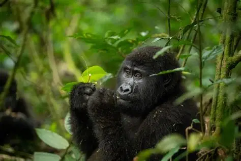

Bwindi National Park
Bwindi Impenetrable National Park is one of the most famous tourist attractions in Uganda. The park is known for protecting endangered mountain gorillas and has thick forests with many bird and animal species. Tourists from different parts of the world visit Bwindi for gorilla trekking, nature walks, and wildlife viewing. Murchison Falls National Park